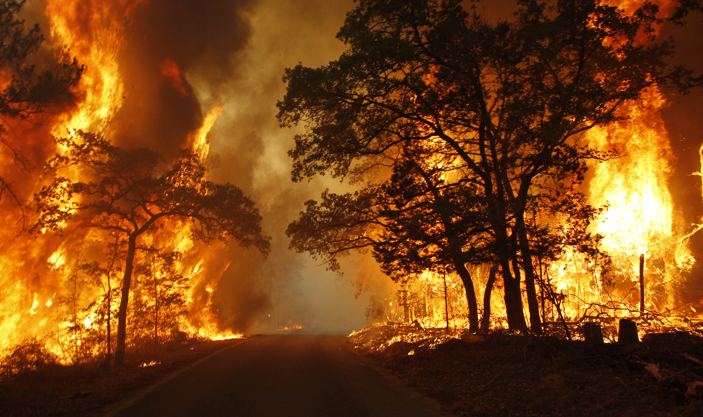

自然環境と防災
中文
ホームページ
身近にある地図
地図とは
地図の読み方
地図のきまり
身近な地図とその種類
さまざまな一般図
さまざまな主題図
電子地図
地理情報システム
地理情報システムとは
GISを支える技術
GISの活用
地図を描く
自然環境
地形
気候
河川
土地利用
自然災害
自然災害と防災
ハザートマップとは
ハザートマップの見方
気候災害
地震・津波と防災
土砂災害と防災
火山災害と防災
台風・雪害と防災
洪水と治水
大都市の災害
future work
３D地図
地すべり後の地形変化
画像の例

×